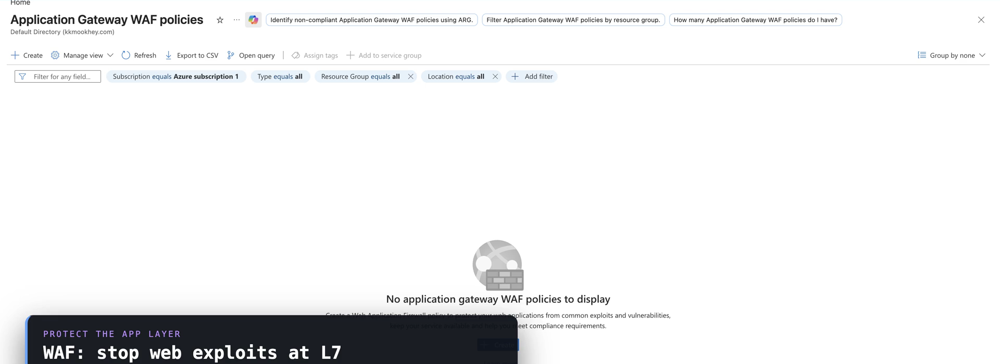
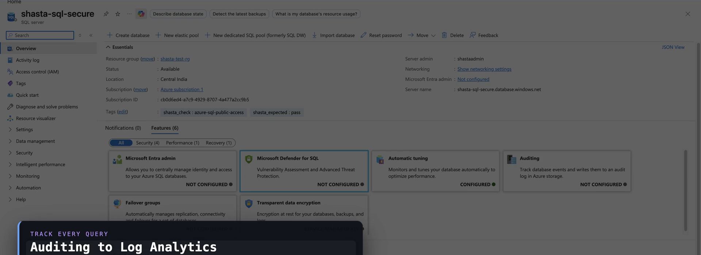
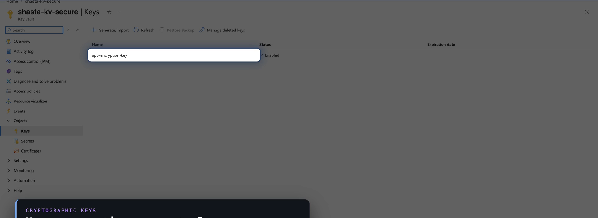

SC-100 · Domain 4 — Security Solutions for Applications & Data
Applications
& Data
Securing the two assets the business runs on — across Microsoft 365, custom applications, and the Azure data platform.
DISCOVER → CLASSIFY → MODEL → PROTECT
Securing Microsoft 365 · PostureNETWORK INTELLIGENCE · SC-100
Microsoft Secure Score
Measure posture across four groups
IDENTITY
accounts & sign-in
DEVICE
endpoints & compliance
PLANNED SCORE
CURRENT-LICENSE SCORE
ACHIEVABLE SCORE
Exam trap: Secure Score measures control adoption — not breach probability. Posture tool, not a risk score.
Securing Microsoft 365 · ProtectionNETWORK INTELLIGENCE · SC-100
Four layers on top of posture
Protect the content, the SaaS estate, the endpoint & the data
1
Defender for Office 365
Email & collaboration — Exchange, SharePoint, OneDrive, Teams. Phishing, malware, BEC.
2
Defender for Cloud Apps
CASB — shadow-IT discovery, SSPM, threat protection, OAuth app governance.
3
Intune + Purview
Device compliance → Conditional Access; Purview labels & DLP for M365 data.
Don't substitute: Defender for Office 365 = the content channel. Defender for Cloud Apps = the SaaS estate.
Copilot for Microsoft 365 · Data securityNETWORK INTELLIGENCE · SC-100
Copilot inherits your data posture
Secure the data first — Copilot follows
- Copilot never returns data the user can't already access — it honors existing permissions.
- Where a label applies encryption, the user must hold the EXTRACT usage right (plus VIEW) before Copilot returns that content.
- The real risk is oversharing of already-accessible data — the control is Purview DSPM for AI + the Copilot DLP location.
Exam framing: the answer is "secure the data with Purview" — not "lock down Copilot."
Securing applications · Posture & threat modelingNETWORK INTELLIGENCE · SC-100
STRIDE — at design time, when fixes are cheap
Rank the portfolio, then model the threats
- Spoofing → authentication · Tampering → integrity · Repudiation → audit logging
- Information disclosure → encryption · Denial of service → availability · Elevation of privilege → authorization
- Inventory and rank apps by criticality & exposure; the Microsoft Threat Modeling Tool supports STRIDE with Azure stencils.
DEFENDER FOR APP SERVICE
DEFENDER FOR APIs
MODEL AT DESIGN TIME
Securing applications · The security lifecycleNETWORK INTELLIGENCE · SC-100
SDL & shift-left DevSecOps
Embed security across every phase
⌁
SDL — five core phases
Requirements → design → implementation → verification → release, bracketed by training and response.
→
⇤
Shift left
Integrate at every stage, not at the end. The later a flaw is fixed, the more it costs.
→
⚙
DevSecOps
SAST + DAST, dependency & secret scanning, SBOM, supply-chain protection.
DEV WORKSTATIONS
REPOSITORIES
BUILD SYSTEMS
DEPLOYMENT
Securing applications · Identity & edgeNETWORK INTELLIGENCE · SC-100
Go secretless, then guard the edge
Workload identities, API Management & WAF
Grounded · Azure · Web Application Firewall
OWASP rules at the edge
Prefer managed identities in Azure; use workload identity federation outside it — no stored secrets. API Management: Entra ID OAuth, managed identities, private connectivity, TLS.
Front internet-exposed apps with Azure WAF (App Gateway or Front Door), OWASP core rule sets — Detection then Prevention.
portal.azure.com — Azure Web Application Firewall

Securing data · Discover & classifyNETWORK INTELLIGENCE · SC-100
You can't protect what you haven't found
Discover & classify first
portal.azure.com — Azure SQL · Data Discovery & Classification

Grounded · Azure · SQL Data Classification
Classification keys the controls
Purview discovers and labels across Azure, on-prem, M365, and multicloud — sensitive information types, trainable classifiers, the Data Map. Sensitivity labels carry encryption that travels with the data.
For structured data, SQL Data Discovery & Classification labels columns — key controls to the label, not location.
Securing data · Encryption & detectionNETWORK INTELLIGENCE · SC-100
Layered encryption · the right Defender plan
Encrypt at rest & in transit, then detect
Grounded · Azure · Key Vault
Key Vault is the control plane
At rest by default with platform-managed keys; customer-managed keys in Key Vault for control. Infrastructure (double) encryption adds a second layer — high-assurance, not default. In transit: TLS 1.2 + MACsec.
Name the plan per asset: Defender for Storage (Blob/Files/Data Lake) vs Defender for Databases (SQL, OSS relational, Cosmos DB).
portal.azure.com — Azure Key Vault

RememberNETWORK INTELLIGENCE · SC-100
Applications & Data in five rules
The architect's app & data floor
- 1 · Secure Score measures M365 control adoption across Identity/Device/Apps/Data — not breach probability.
- 2 · Defender for Office 365 (content) ≠ Defender for Cloud Apps (SaaS); Copilot oversharing → Purview.
- 3 · STRIDE at design time; SDL + shift-left DevSecOps; go secretless with managed identities.
- 4 · Front apps with Azure WAF — Detection then Prevention.
- 5 · Discover → classify → encrypt → detect; CMK in Key Vault; right Defender plan per asset.
Hands-on · 1 of 2NETWORK INTELLIGENCE · SC-100
Do this
STRIDE a business-critical app
GOAL · Turn one app's data flow into a six-row threat model
- Take your highest-criticality app; draw its data flow across trust boundaries.
- Enumerate one threat per STRIDE letter with the Azure control: S→Entra, T→TLS, R→audit, I→CMK, D→WAF/DDoS, E→PIM.
- That six-row table is a threat model.
✓ DONE WHEN · Every STRIDE letter maps to a concrete control
Hands-on · 2 of 2NETWORK INTELLIGENCE · SC-100
Do this
Run the discover-to-detect chain
GOAL · Complete discover → classify → encrypt → detect on one store
- Run Purview or SQL Data Discovery & Classification against one store; apply a sensitivity label.
- Confirm CMK in Key Vault backs its encryption.
- Turn on the matching plan — Defender for Storage or Defender for Databases.
✓ DONE WHEN · One store has completed the chain in miniature